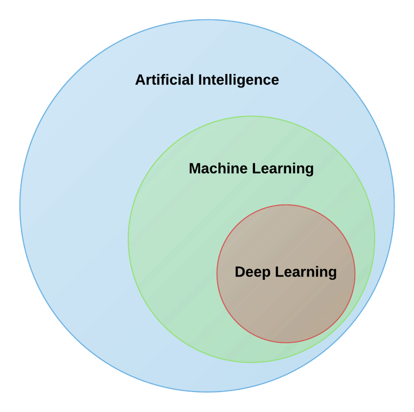
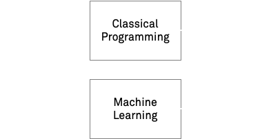
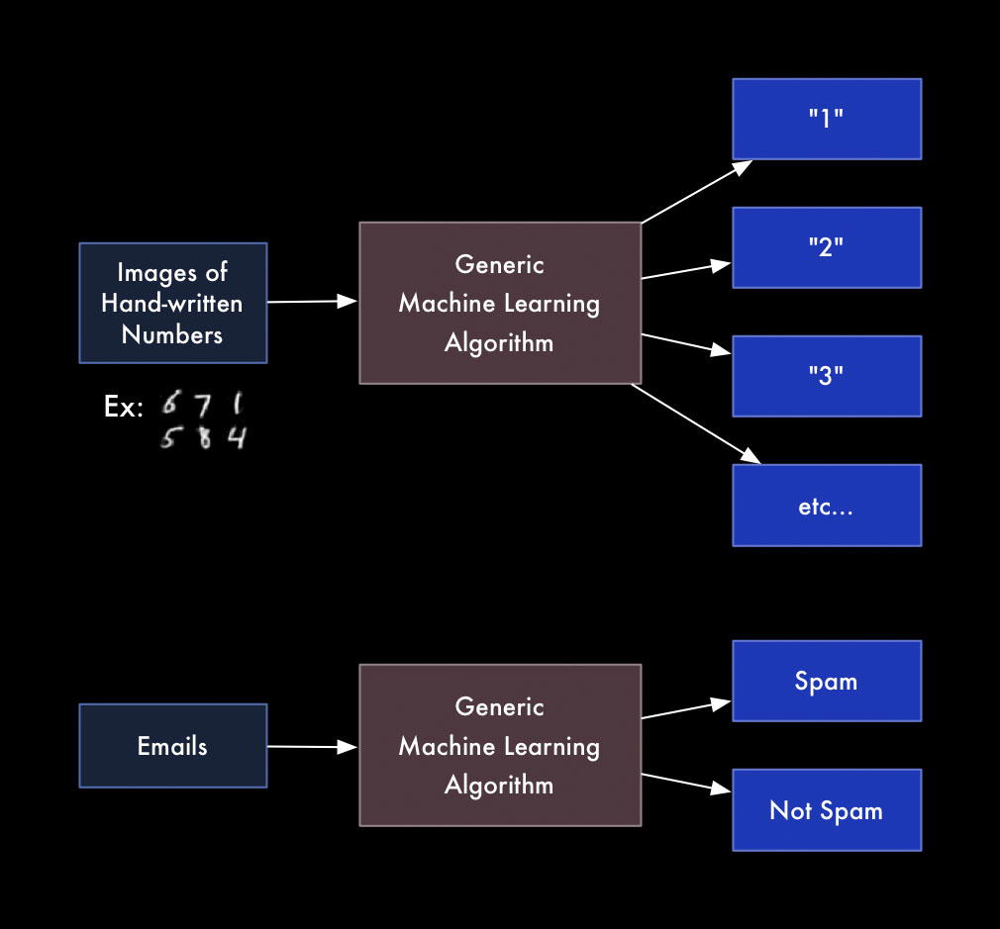
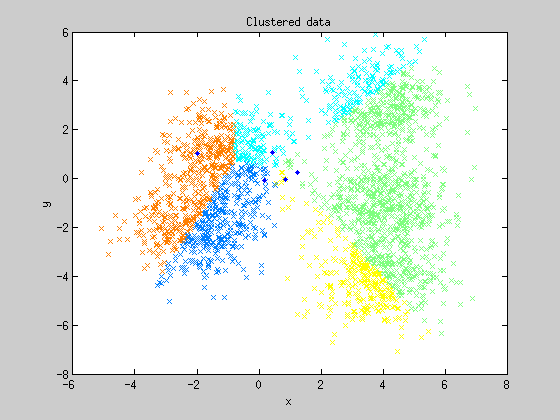
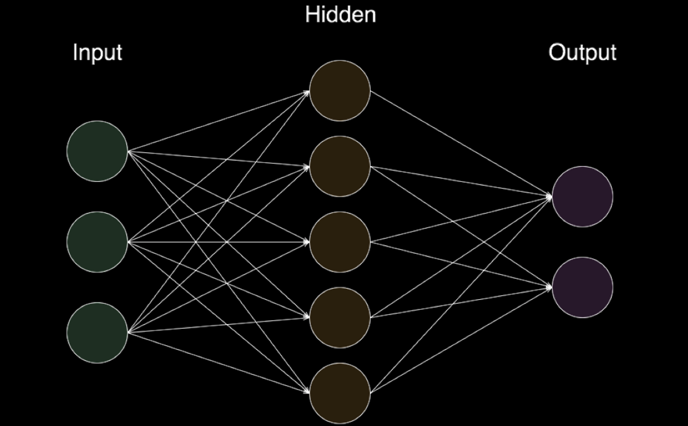
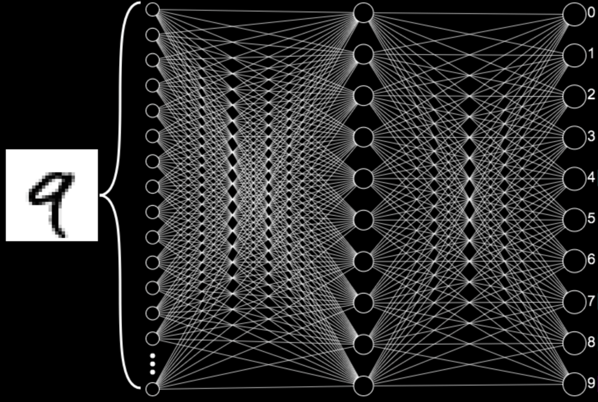
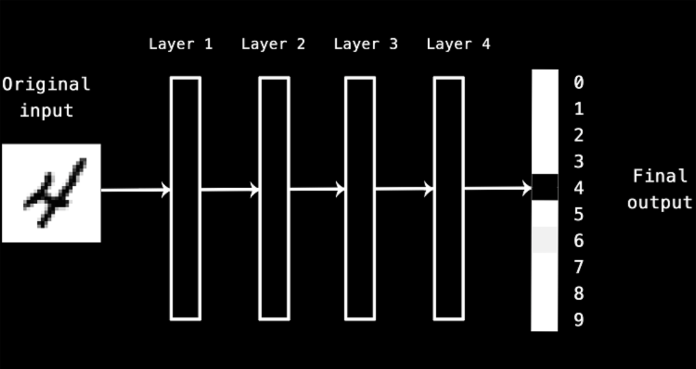
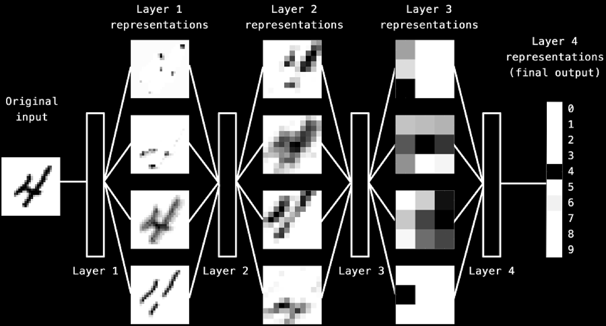

Artificial intelligence (AI) is an area of computer science that emphasizes the creation of intelligent machines that work and react like humans.

ML
Machine Learning at its most basic is the practice of using algorithms to parse data, learn from it, and then make a determination or prediction about something in the world.
--
So rather than hand-coding software routines with a specific set of instructions to accomplish a particular task, the machine is “trained” using large amounts of data and algorithms that give it the ability to learn how to perform the task.


1.2 History
Analytical Engine
“ The Analytical Engine has no pretensions whatever to originate anything. It can do whatever we know how to order it to perform… Its province is to assist us in making available what we are already acquainted with ”
Learning to map input data to known targets (also called annotations), given a set of examples (often annotated by humans)
Unsupervised Learning

Finding interesting transformations of the input data without the help of any targets
Reinforcement Learning
In reinforcement learning, an "agent" receives information about its environment and learns to pick actions that will maximize some reward.
1.5 What is a neural network?


1.6 What is Deep Learning
DL
Deep learning is a specific subfield of machine learning, a new take on learning representations from data which puts an emphasis on learning successive "layers" of increasingly meaningful representations.
The 'Deep' in Deep Learning


Understanding how deep learning works in three figures
Simple method for "do as I do" motion transfer: given a source video of a person dancing the model can transfer that performance to a novel (amateur) target after only a few minutes of the target subject performing standard moves
photorealistic video-to-video translation. It can be used for turning semantic label maps into photo-realistic videos, synthesizing people talking from edge maps, or generating human motions from poses.
...If I had to offer an extravagant analogy (and I do) I’d say it’s like writing with a deranged but very well-read parrot on your shoulder. Anytime you feel brave enough to ask for a suggestion, you press tab, and...
I should say clearly: I am absolutely 100% not talking about an editor that “writes for you,” whatever that means. The world doesn’t need any more dead-eyed robo-text.
The animating ideas here are augmentation; partnership; call and response.
The goal is not to make writing “easier”; it’s to make it harder.
The goal is not to make the resulting text “better”; it’s to make it different — weirder, with effects maybe not available by other means.
Robin Sloan
Dino Run
Build an AI to play Dino Run / A tutorial to build a Reinforcement Learning model